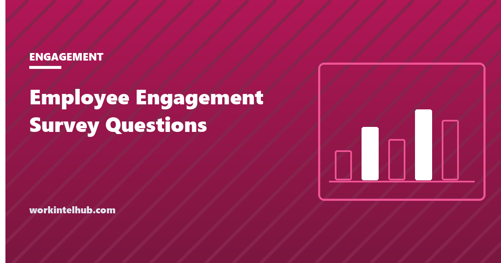

Employee Engagement Survey Questions

An employee engagement survey measures how committed people are to the organisation and their work, and what is driving that commitment up or down. The questions below are grouped by the drivers that consistently explain most of the variation: role clarity and enablement, the manager, growth and recognition, team, leadership and wellbeing.
Pick the items that fit, build the survey, and then read the second half of the page, because the questions are the easy part. Most engagement surveys fail after the results arrive, not before.
Build your survey
Engagement index
Role and enablement
Manager
Growth and recognition
Team and culture
Leadership and direction
Wellbeing
Open questions
Statements are written for a five-point agreement scale, strongly disagree to strongly agree. The open questions are free text. Twenty to thirty items is the practical maximum before completion rates fall.
Design rules that decide whether the data means anything
- One scale, five points. Strongly disagree to strongly agree, with a neutral middle. Mixing scales within a survey makes the results incomparable; ten-point scales add noise without adding information.
- Statements, not questions. "I know what is expected of me" can be agreed or disagreed with. "Do you know what is expected of you?" invites yes.
- One idea per item. "My manager gives useful feedback and recognises good work" is two items. Someone who agrees with one and not the other has no honest answer.
- Anonymity with a floor. Report results only for groups of five or more, and say so in the introduction. A team of three cannot answer honestly about its manager if the manager will see three responses.
- Twenty to thirty items. Completion falls sharply past that, and the people who stop are not a random sample.
- The same core every time. Trend is the useful signal. Rewriting the survey each year gives you a new baseline and no trend. Keep 15 fixed items and rotate the rest.
Reading the results
The overall engagement score is the least useful number the survey produces. Three readings are worth more.
Favourability by item. The share answering 4 or 5. An item at 45 per cent favourable when the rest sit at 70 is the finding. Sort the items and look at the bottom five.
Variation by manager. Engagement is local. A company average of 68 per cent favourable can contain teams at 85 and teams at 40, and the company-level number hides both. Report by team wherever the anonymity floor allows.
The gap between the index and the drivers. If the engagement index is high but the manager items are low, people are staying despite their managers, usually for pay or the work itself, and that is fragile. Our eNPS entry covers the single-item version of the index and why it should not be used alone.
What to do with the answers
- Publish the headline results within two weeks, including the bad ones. A survey whose results vanish teaches people not to answer the next one.
- Pick two things, not ten. Each team chooses one item to work on and the company chooses one. Everything else is acknowledged and parked.
- Make the action visible and attributable. "Because you told us meetings were unmanageable, no-meeting mornings start in October." The survey has to be seen to cause things.
- Re-measure the two items in three months with a five-question pulse, not a full survey.
- Check the results against behaviour. Turnover by team, absence and the signs in our guide to spotting burnout in the data either corroborate the survey or contradict it, and a contradiction usually means people did not feel safe answering.
The initiatives that tend to move the numbers are in our guide to employee engagement ideas; the ones for distributed teams are in the remote version. If the survey is being run because turnover is already high, the stay interview gets to the individual reasons faster.
Key takeaways
- Group items by driver: role and enablement, manager, growth and recognition, team, leadership, wellbeing. Add an engagement index and two open questions.
- Use one five-point agreement scale, statements rather than questions, one idea per item, and an anonymity floor of five responses.
- Keep 15 core items fixed across years so the trend means something. Twenty to thirty items is the practical ceiling.
- Read favourability by item and by team. The company average hides the teams that need help.
- Publish results within two weeks, pick two actions, make them visibly caused by the survey, and re-measure with a short pulse.
- If results contradict turnover and absence data, people did not feel safe answering.
Frequently asked questions
What questions should be on an employee engagement survey?
A small engagement index (recommend, intend to stay, pride, effort), then statements covering role clarity and enablement, the manager, growth and recognition, team, leadership and wellbeing, plus two or three open questions. The builder above assembles a survey from 35 such items.
How many questions should an engagement survey have?
Twenty to thirty. Completion rates fall past that and the people who drop out are not random. Keep around 15 items fixed from year to year for trend and rotate the rest as priorities change.
What scale should engagement survey questions use?
A single five-point agreement scale from strongly disagree to strongly agree. Statements rather than questions, one idea per statement. Report the share answering 4 or 5 as favourability.
Should engagement surveys be anonymous?
Yes, with a stated reporting floor, usually five responses. Results for smaller groups are folded into the next level up. Without the floor, people on small teams cannot answer honestly about their manager.
How often should we run an engagement survey?
A full survey once a year, with a short pulse of about five items on the chosen actions three months later. More frequent full surveys produce fatigue and lower response rates without producing more information.
What is a good engagement survey score?
There is no useful universal benchmark, because scores depend on the items and the scale. The meaningful comparisons are your own trend over time, the spread between teams, and the gap between your lowest and highest items.
What is the difference between engagement and satisfaction?
Satisfaction is whether people are content; engagement is whether they are committed and putting in discretionary effort. A satisfied employee can be disengaged, and a highly engaged one can be dissatisfied with specific things. The survey should measure both, with the index covering engagement.